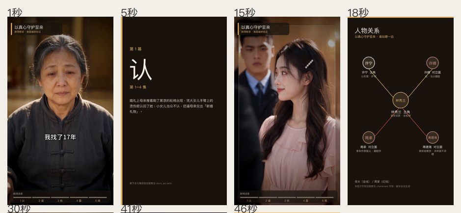
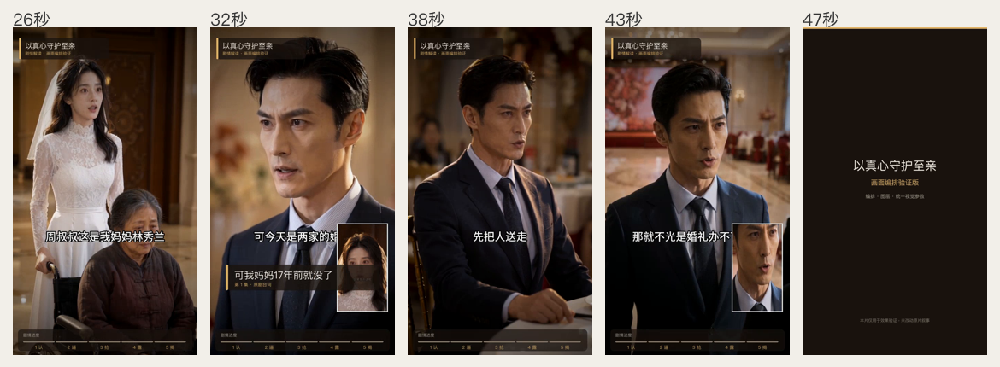
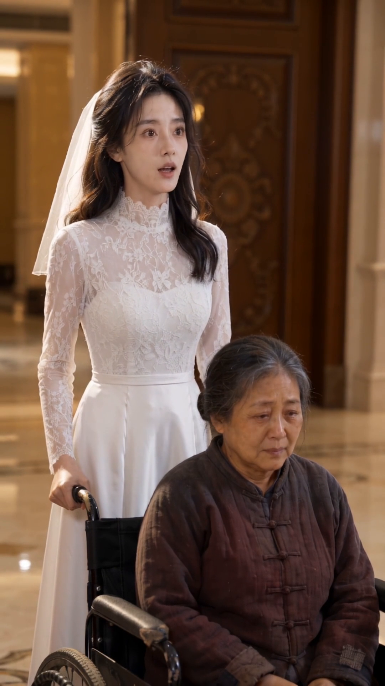
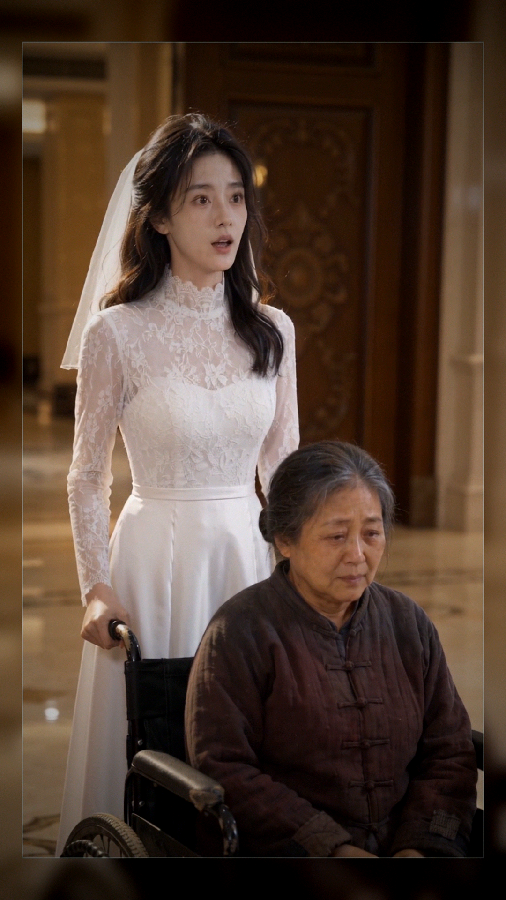
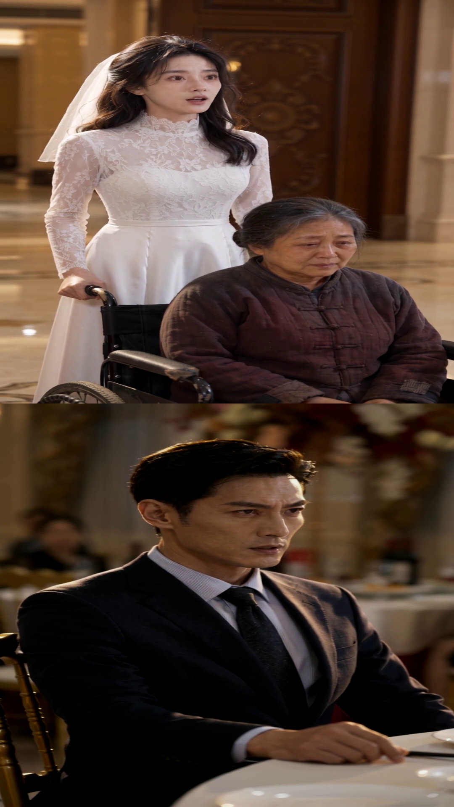
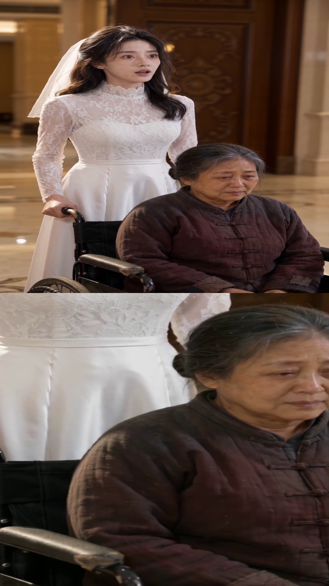
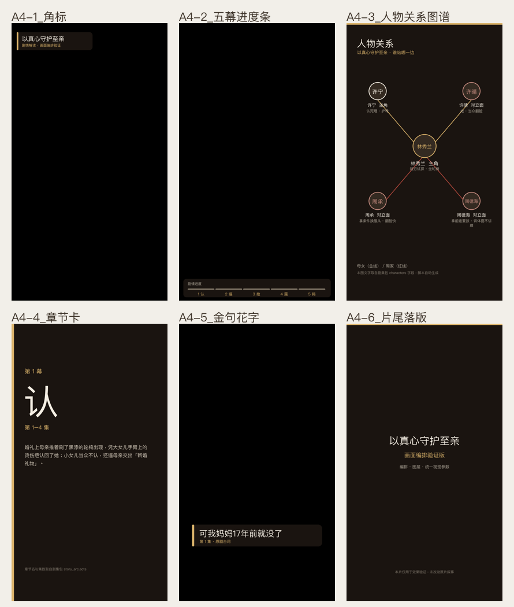

一句话结论：四条可视化手段（含 A4 信息图层）全部能自动跑出来，不用装任何库、不用剪映、不用手写字。 这轮做的关键改动不是"再加效果"，而是不再全片一刀切——按镜头类型挑着挂：单人特写只做轻微统一调色，多人镜头才加画中画，只有画面里有第二个可看的东西时才插辅助窗。A2 分屏按你的反馈改成了"辅助画面放别人 / 放细节放大"，不再上下都是同一个人。
| 上一轮的问题 | 这次怎么改 |
|---|---|
| 分屏上下都是同一个人，看着重复 | 辅助窗改成放另一个人（第 32 秒，窗里是新娘，主画面是新郎）或放细节放大（第 43 秒，窗里是脸部放大）。同时另出两张上下分屏的改良静态图做备选。 |
| 全片一刀切，特写镜头加了画中画也看不出来 | 改成按镜头挑：特写只挂统一调色；多人 / 前后景才加画中画和模糊背景。 |
| A4 只有方案，没真跑过 | 六张中文图层全部由脚本从剧集包自动取数渲染，已叠进演示片。 |
| 担心加了约束把叙事弄坏 | 所有处理都在成片之后只动画面，段数、段序、时长、台词、原剧字幕一个没动（本轮按你说的"不去字幕"）。 |
先扫了全片 11 个时间点的画面，确认这条片子里有单人特写、双人前后景、多人同框三类镜头，再按类定规矩。这是"重新编排"的依据，不是随手挑的。
| 镜头长什么样 | 挂什么 | 为什么 |
|---|---|---|
| 单人特写 如 60s 老太太、100s 新郎 | A3 统一调色 + A4 角标／进度条 | 画面太小，缩小主画面配模糊背景几乎看不出来，硬挂只会显脏 |
| 多人 / 前后景 如 20s、90s 新娘 + 轮椅老太太 | A1 画中画 + A3 + A4 | 四周有空间，主画面缩小、底层模糊一眼可辨，甲方最看得见工作 |
| 有第二主体的镜头 对峙、有明显表情或道具 | 在上面基础上，只在这几段插 A2 辅助窗 | 有第二个可看的东西，辅助窗才不重复；每处 5 秒左右，不铺满 |
原片拆两路：一路放大模糊压暗当底层，一路缩到 90% 叠在中间，加一圈细白边。用 ffmpeg 的 split / boxblur / scale / overlay / drawbox，一条命令全片通用。
只在多人 / 前后景镜头挂。前后对照见下方第五节。
演示片里用的是主画面完整 + 右下角小辅助窗，不压扁人物：窗里放另一个人（32 秒）或脸部细节放大（43 秒），各 5 秒。另出两张上下分屏的改良版静态图，辅助屏分别是"别人"和"细节放大"，见第五节。
你说得对，这个效果比较苛刻，全片铺会坏观感。所以只挑镜头插，不做全片。
亮度 +3%、对比度 1.03、暗角、裁 8 像素再拉回、轻微噪点，所有镜头统一套，固定不随机——这样它会变成账号的风格印记，而不是像批量洗稿。
演示片为快速出片用了轻量参数（分辨率减半、暂时去掉最慢的噪点、快速编码），正式接产线时噪点和全分辨率都保留。静态对照图仍是全分辨率完整参数。
六张图层，文字一句没手写，全部从现成的剧集包里自动取：
| 图层 | 数据从哪来 |
|---|---|
| 固定角标（剧名） | drama_facts → title |
| 五幕进度条（认 / 逼 / 抢 / 露 / 揭） | story_arc.acts 的幕号与幕名 |
| 人物关系图谱 | characters 的 5 个人物、角色、特征词，主角居中，母女金线 / 周家红线 |
| 章节卡（第 1 幕「认」，第 1–4 集） | story_arc.acts 的幕名、集范围、剧情摘要 |
| 金句花字（"可我妈妈17年前就没了"） | elements.golden_quotes，自带集号 |
| 片尾落版 | 剧名 + 固定落款 |
技术上用 Pillow 画透明 PNG，再用 ffmpeg overlay 叠上去。中文用系统自带苹方字体，没有装任何东西。
asset_index.json。要么以后补跑一次素材索引，要么换成从金句 / 幕结构推算的简化版。这轮如实留空，不编数据。
| 时间 | 用的原片镜头 | 挂了什么 |
|---|---|---|
| 0–12 秒 | 60–72 秒，老太太特写 | A3 统一调色 + 角标 + 进度条；3–6 秒插第 1 幕章节卡 |
| 12–24 秒 | 20–32 秒，双人前后景 | A1 画中画 + A3 + 角标 + 进度条；3–6.5 秒插人物关系图谱 |
| 24–36 秒 | 88–100 秒，新娘 + 轮椅 | A3 + 角标 + 进度条；4–9 秒插"另一个人"辅助窗；6–12 秒金句花字 |
| 36–48 秒 | 100–112 秒，新郎 | A3 + 角标 + 进度条；3–8 秒插"细节放大"窗；9–12 秒片尾落版 |






这两版是把人物上下压扁的，观感偏重，所以只当备选。演示片里实际用的是"主画面完整 + 小辅助窗"，见第四节。

| 项目 | 实际情况 |
|---|---|
| 要不要装库 | 不用。本机已有 ffmpeg 6.1（在 /opt/anaconda3/bin/，只是没进 PATH）、Pillow 12.3.0、系统苹方字体。A1–A3 全用 ffmpeg 原生滤镜，A4 用 Pillow 画 PNG。 |
| 唯一缺的东西 | 这个 ffmpeg 没编进 drawtext（画中文文字），所以用 Pillow 画好图再叠，绕开了，同样零安装。 |
| 跑一次多久 | 第一次全分辨率 + 逐像素噪点，单段跑了 7 分钟；改成轻量预览参数后，全套 52 秒（6 张图层 + 4 段 + 拼接 + 所有对照图）。 |
| 要不要剪映 | 完全不碰。整条链子是 Python 调 ffmpeg，配置一次批量跑。 |